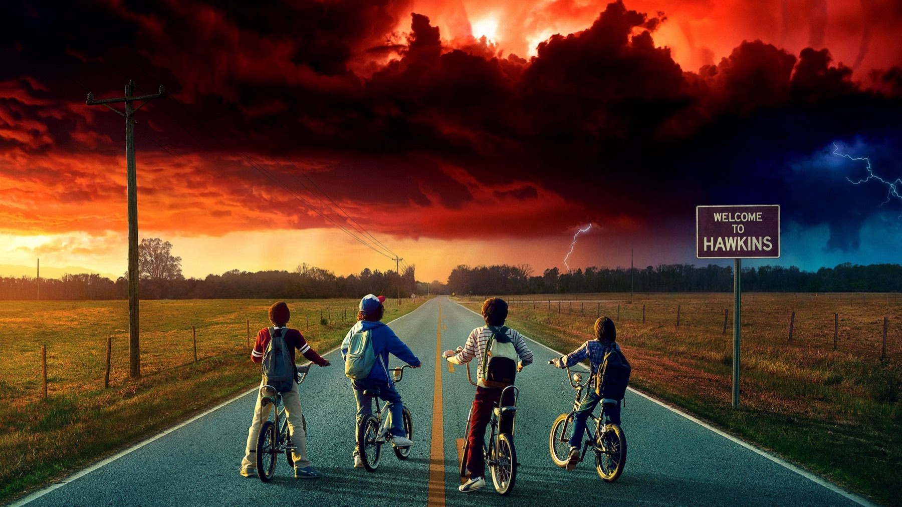
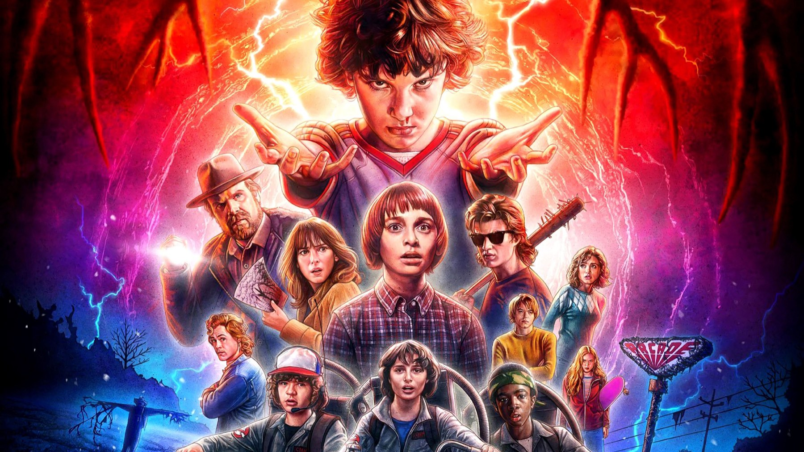

Stranger Things – Stagione 1
Un bambino scomparso e una parete di lucine: rivista dopo il finale, l'esordio resta il capitolo più compatto della serie
Dopo aver visto il finale, tornare all'inizio di Stranger Things fa un effetto strano, perché sembra quasi un'altra serie: più piccola, ma molto più sicura di sé. C'è un bambino che sparisce e c'è una madre che parla con le lampadine. Eppure, delle cinque stagioni, questa per noi resta la migliore, e la ragione è quasi banale: è l'unica che racconta una storia sola e la chiude, senza dover reggere una mitologia sulle spalle.
Lo si vede da come è scritta, perché ogni scena serve a rispondere a una domanda sola, dov'è Will, e perfino i personaggi che sembrano andare per conto loro finiscono per inciampare in quella stessa domanda. Le stagioni successive avranno nemici più grandi e posta più alta, però dovranno sempre inventarsi un motivo per tenere insieme tutti; qui invece il motivo c'è dalla prima inquadratura.
Di cosa parla la prima stagione di Stranger Things?
Hawkins, Indiana, novembre 1983. Il 6 novembre Will Byers torna a casa in bicicletta dopo una lunghissima partita a Dungeons & Dragons con gli amici, ma non arriva mai. Sua madre Joyce (Winona Ryder) si rifiuta di crederlo morto, mentre lo sceriffo Jim Hopper (David Harbour) comincia a indagare controvoglia. Intanto i suoi amici di sempre partono a cercarlo per conto loro, e nel bosco trovano una ragazzina con la testa rasata e un numero tatuato sul polso: si chiama Undici (Millie Bobby Brown) ed è scappata dal laboratorio governativo diretto dal dottor Brenner (Matthew Modine).
Il racconto procede su binari paralleli, uno per generazione: i ragazzini in bicicletta, gli adolescenti (Nancy, la sorella di Mike, con Jonathan, il fratello di Will) e gli adulti. Per sei episodi si toccano poco, poi negli ultimi due si fondono. Si tratta di una struttura semplice, che i fratelli Duffer controllano con precisione; le annate successive invece, con un cast sempre più largo, non riusciranno più a tenerla così stretta.
La scena che vale il film
Arriva in «Capitolo tre: Luci natalizie», diretto da Shawn Levy. Joyce è convinta che Will le parli attraverso le lampadine di casa, quindi appende le luci di Natale sulla parete del soggiorno, dipinge sotto ogni lampadina una lettera dell'alfabeto e chiede al figlio dove si trova. Allora le luci si accendono una dopo l'altra e compongono RIGHT HERE, «proprio qui». Poco dopo, però, la parete scandisce un'altra parola, RUN, «scappa», e il sollievo diventa terrore: per raccontarlo basta la faccia di Ryder.
Questa scena funziona perché chiude un cerchio aperto nel primo episodio, diretto dagli stessi Duffer. Lì Will, inseguito da una sagoma sulla strada, cade dalla bicicletta, corre nel bosco fino al capanno di casa e imbraccia un fucile; la lampadina sopra di lui si accende sempre più forte, qualcosa gli compare alle spalle, e un attimo dopo il bambino non c'è più. La luce che lo aveva tradito diventa due episodi dopo l'unico modo per ritrovarlo. Pochissime serie hanno un'idea visiva così semplice e la sfruttano così a fondo.

Il resto lo fanno gli attori e il suono. Harbour, per esempio, regge l'altra metà del racconto con uno sceriffo stanco e ironico, segnato da un lutto che la serie svela poco a poco, senza mai trasformarlo in un monologo. La colonna sonora di Kyle Dixon e Michael Stein, i due del gruppo elettronico Survive, usa solo sintetizzatori, perciò dà a Hawkins un'aria da cinema di genere degli anni Ottanta prima ancora che compaia un'immagine.
La nostra sintesiLa prima stagione di Stranger Things ha il coraggio di essere piccola: un bosco, una parete di lucine, una madre che non si dà per vinta.
Cosa non funziona
Il punto debole è la linea degli adolescenti. La storia di Nancy, contesa tra Steve e Jonathan, occupa molto spazio negli episodi centrali, e per lunghi tratti somiglia a un film di liceo infilato dentro un racconto dell'orrore. Il segnale più chiaro arriva da Barb, l'amica di Nancy che sparisce durante una festa in piscina nel secondo episodio. La serie la mette da parte presto; il pubblico, invece, si è schierato con lei, al punto da trasformarla in un piccolo fenomeno tra i fan. Quando i fan si affezionano proprio a chi la sceneggiatura liquida in fretta, vuol dire che gli autori stavano guardando dalla parte sbagliata.
Anche il mostro funziona meno di quanto ricordassimo, perché la paura dipende dalla distanza. Finché resta una sagoma sulla strada o qualcosa alle spalle di Will, mette i brividi; ma quando si mostra per intero, nelle ultime puntate, perde il mistero e diventa una creatura come tante. Inoltre la chiusura della linea del laboratorio di Brenner è più sbrigativa di quanto la costruzione iniziale lasciasse sperare.
La prima stagione rispetto alle altre e al cinema degli anni Ottanta
Dal primo giorno la serie viene accusata di essere un collage di citazioni. Qui la consideriamo un'accusa ingiusta, e il confronto più chiaro è con E.T. di Steven Spielberg: anche lì un gruppo di ragazzini in bicicletta nasconde in casa una creatura fuori dal comune e la protegge dagli uomini del governo. I Duffer prendono lo stesso schema, ma lo rovesciano, perché la creatura da proteggere è una bambina con un numero sul polso, e il pericolo vero sono gli adulti che l'hanno cresciuta in laboratorio. Il problema, invece, arriverà più avanti, quando la nostalgia comincerà a sostituire la storia.
Rispetto alla quinta, poi, la distanza è evidente, ma ha una ragione precisa. Il capitolo finale ha budget da cinema e puntate lunghe come film, e siccome deve accompagnare all'uscita un cast enorme, spiega moltissimo. L'esordio invece spiega pochissimo: del Sottosopra sappiamo quanto basta per avere paura, così il mistero tiene in piedi tutto.

All'inizio quasi nessuno ci credeva: diverse reti via cavo avevano rifiutato il progetto perché non volevano bambini come protagonisti; su Netflix, invece, la critica le ha dato il 97% di recensioni positive su Rotten Tomatoes e 76 su 100 su Metacritic. Agli Emmy del 2017 ha raccolto 16 candidature e cinque premi, tra cui il montaggio sonoro, il missaggio sonoro e la musica dei titoli di testa, mentre il cast ha vinto il premio d'insieme ai SAG Awards. A serie conclusa, nel gennaio 2026, anche Everyeye l'ha messa in cima alla classifica delle stagioni.
A chi la consigliamo, e a chi no
Prima di tutto a chi non ha mai visto Stranger Things e vuole capire perché se ne parla da dieci anni: questi otto episodi si guardano in un fine settimana, stanno in piedi da soli e si chiudono in modo soddisfacente. Se invece avete appena finito la quinta, vi consigliamo di rivederli per ritrovare i personaggi da piccoli e misurare quanta strada hanno fatto. Non la consigliamo a chi cerca un horror vero, perché la paura resta sempre a misura di ragazzino; e nemmeno ai bambini sotto i dieci anni, che la scena del capanno e il mostro possono spaventare sul serio. Tutte le stagioni sono disponibili su Netflix.
La prima stagione di Stranger Things resta il capitolo più riuscito della serie: una domanda sola, una parete di lucine e otto episodi che non sprecano un minuto, a parte qualche scena di liceo di troppo.
Domande frequenti
Quanti episodi ha la prima stagione di Stranger Things?
Otto episodi, pubblicati tutti insieme su Netflix il 15 luglio 2016. In italiano si intitolano da «Capitolo primo: La scomparsa di Will Byers» a «Capitolo otto: Il sottosopra».
Dove e quando sono ambientati i primi episodi?
Nella cittadina immaginaria di Hawkins, nell'Indiana, nel novembre del 1983: tutto comincia con la scomparsa di Will Byers, il 6 novembre.
Dove vedere la prima stagione di Stranger Things?
La serie completa, dal primo all'ultimo episodio, è disponibile in abbonamento su Netflix.
Fonti consultate (8)
- Wikipedia – Stranger Things season 1
- Wikipedia – Episodi di Stranger Things (prima stagione)
- Wikipedia – Chapter One: The Vanishing of Will Byers
- Wikipedia – Chapter Three: Holly, Jolly
- BadTaste – Stranger Things (prima stagione): la recensione (Alessia Pelonzi)
- Everyeye – Stranger Things, tutte le stagioni dalla peggiore alla migliore (Marco Fanciuso)
- Rotten Tomatoes – Stranger Things: Season 1
- TMDB – scheda e dove vederlo in Italia